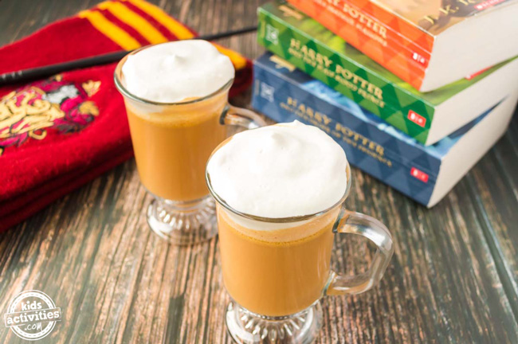

Harry Potter's butter beer

If you're not familiar with the Harry Potter books or films, you might be wondering, What is butterbeer? Is it really beer? Does it contain alcohol?
Butterbeer is a (sort of) fictional beverage that the Harry Potter book characters drink when they visit “The Three Broomsticks” and “Hog’s Head Pub.” (Think cream soda meets butterscotch flavor with a whipped topping.)
ingredients
- 1 cup (8 oz) club soda or cream soda
- ½ cup (4 oz) butterscotch syrup (ice cream topping)
- ½ tablespoon butter
- heavy cream (optional)
- mugs
steps
- Let your butter sit out until it is softened.
- Then pour the butterscotch syrup into a bowl. Butterscotch is what gives the butterbeer its main flavor.
- Add the softened butter. Some recipes call for butter extract, but we like the creamy goodness of the real thing.
- Then combine the syrup and butter.
- Pour cream soda into the mixture and stir.
- Set aside.
- In a separate mixing bowl, whip heavy whipping cream until it forms stiff peaks. It will take a hot minute by hand, but will go faster with a stand mixer. Don’t over whip or you’ll end up with fresh butter.
- Pour the cream soda and butterscotch mixture into two clear mugs, and top with a dollop or two of whipped cream.